Lessons / Earlier videos
Earlier videos
The channel's earlier videos, recorded before the current lessons: TradingView webhooks and alerts, setting up broker APIs with Python, no-code automation with Make, and the basics of options. Each one opens on YouTube.
These are older recordings, so some details have changed since: TD Ameritrade accounts have moved to Charles Schwab, and screens and prices in the apps look different today. Check each provider's current documentation before you follow along.
TradingView alerts, webhooks and no-code automation
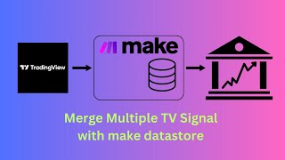
Merge Multiple TradingView Signals using Make.com and place order automaticallyJanuary 5, 2025 · 17:34 · YouTube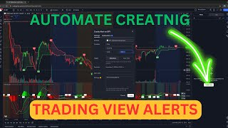
Full Video one click automated Tradingview alert creationOctober 5, 2024 · 10:30 · YouTube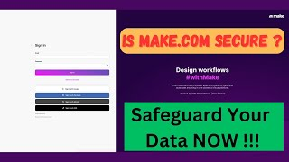
Secure Your Make.com With Correct Environment and SettingsSeptember 18, 2024 · 9:58 · YouTube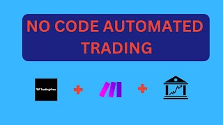
Setup no code automated trading in 10 minutes | TradingView | Make | AlpacaAugust 8, 2024 · 11:17 · YouTube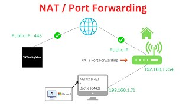
Tradingview NAT setup for home webserver behind ISP router | Port forwardingFebruary 5, 2024 · 5:37 · YouTube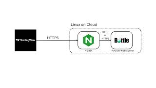
Secure webhook for tradingview with https and client certificate validationJanuary 17, 2024 · 11:18 · YouTube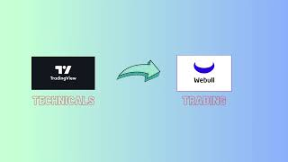
Stock trading using tradingview technicals and webull brokerageJanuary 2, 2024 · 2:10 · YouTube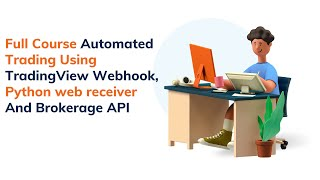
Full course automated trading with tradingview webhook & python web receiver & Etrade API as exampleDecember 24, 2023 · 28:23 · YouTube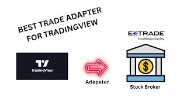
How To Day Trade With Just One Click Using Google Sheets And Tradingview - Part 2 | Etrade APIOctober 10, 2023 · 8:38 · YouTube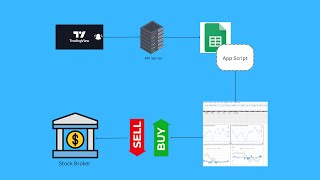
How To Day Trade With Just One Click Using Google Sheets And Tradingview - Part 1September 19, 2023 · 6:34 · YouTube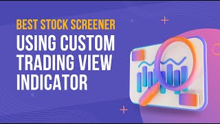
Build Your Own Custom Stock Screener With Trading View And Google SheetsAugust 24, 2023 · 6:31 · YouTube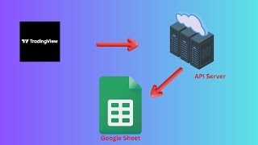
Build A Live Tradingview Dashboard With Google SheetsAugust 13, 2023 · 8:03 · YouTube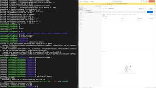
Python webhook receiver | API Server Setup | Trading botDecember 21, 2022 · 7:46 · YouTube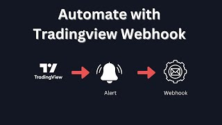
Setting Up Webhooks For Stock Automation In TradingviewDecember 18, 2022 · 5:20 · YouTube
Broker APIs with Python
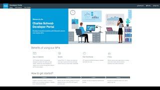
Step by Step details to setup API environment for TD Ameritrade Schwab using PythonOctober 26, 2024 · 9:10 · YouTube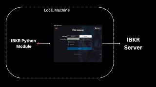
Interactive broker TWS API automation setupAugust 1, 2024 · 5:20 · YouTube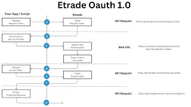
How to setup Etrade API for trading automation using Oauth1.0 with Postman and Python explainedNovember 15, 2023 · 8:51 · YouTube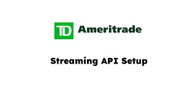
Streaming with TD Ameritrade | Websocket | Trading automationMarch 29, 2023 · 4:39 · YouTube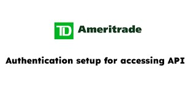
TD Ameritrade auth setup for API accessDecember 6, 2022 · 5:01 · YouTube
Options basics
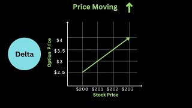
Option Greek Delta explainedMarch 6, 2023 · 5:50 · YouTube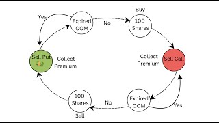
Call and Put cycle | Wheel StrategyJanuary 31, 2023 · 6:03 · YouTube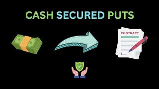
Cash Secured PutsJanuary 23, 2023 · 8:22 · YouTube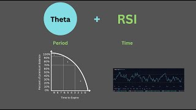
Covered Calls | Theta and RSIJanuary 16, 2023 · 11:08 · YouTube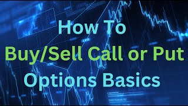
How to trade a call or buy optionJanuary 8, 2023 · 9:18 · YouTube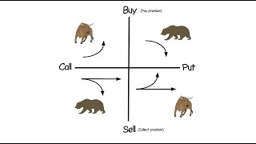
Options Trading BasicsDecember 30, 2022 · 9:36 · YouTube
Other topics
- Unlocking trading strategies and mindsetsMay 28, 2023 · 2:47 · YouTube
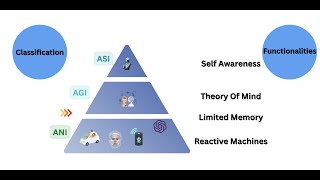
Overview of Artificial Intelligence | Open AI | ChatGPT | Azure OpenAIFebruary 12, 2023 · 8:21 · YouTube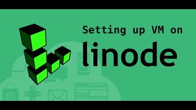
Trading bot on cloud for $5 per month | Linode | Firewall SetupDecember 25, 2022 · 7:42 · YouTube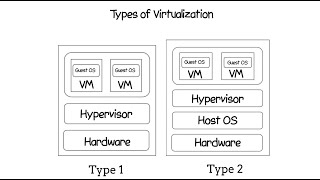
Basics of virtualization | Creating virtual machine on your laptopDecember 10, 2022 · 8:50 · YouTube